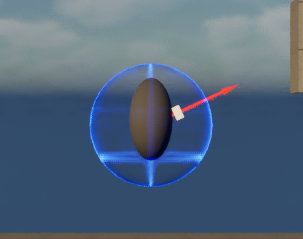
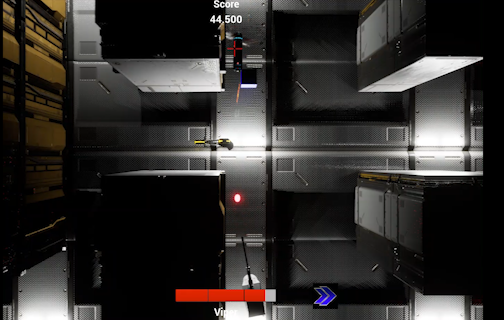

Player Movement
I built the movement system around responsive controls that support fast-paced combat. Research into other shooters showed me that input should feel predictable, and that players need to reposition while aiming independently.
A fast-paced 2.5D space shooter about dodging, aiming and surviving enemies and projectiles.
In our team, I was responsible for the player-related gameplay systems: movement, rotation and aiming, shooting, power-ups and the player health system. My goal was to make the player feel responsive and in control, while making sure every system supported the combat experience as a whole.
Next to building these systems, I researched existing games, documented my design decisions, evaluated gameplay issues and used feedback to find improvements.
The prototype let me explore how aiming direction could stay clear while the player moves. That early test informed the controls and combat systems developed for the game.

I built the movement system around responsive controls that support fast-paced combat. Research into other shooters showed me that input should feel predictable, and that players need to reposition while aiming independently.
I worked on how the player rotates and aims, so the ship's orientation and shooting direction stay readable. Playtesting revealed that players could aim outside the camera view, which led to a fix (see the development process below).
I implemented shooting so the player can attack while repositioning. Movement, rotation, aiming and shooting have to work as one, because together they decide how combat feels.
I contributed to the power-ups, which let the player's capabilities change during a run. They had to work alongside the existing movement, combat and health mechanics.
My main individual contribution. Inspired by My Friend Pedro, I split health
into visible segments instead of one continuous bar, so players can read damage
quickly in busy fights. A PlayerHealth component stores current and
maximum health (120 HP) and handles damage and healing, while the UI updates
immediately when health changes. The Bastion shield is handled separately and
absorbs damage before regular health is touched.
Systems online.
A small recreation of the segmented layout (12 segments of 10 HP). It is not the game build.
During implementation, I analysed how other games handle movement, combat readability, aiming and health feedback. I used them as references to judge what suits our own game, not to copy their mechanics.
In the finished game, movement, aiming and combat come together on screen, with score and health feedback helping the player read what is happening.

My work gave Splitstar a responsive player foundation: movement, aiming, shooting, power-ups and a readable segmented health system that work together.
The project taught me to treat gameplay systems as connected parts of one player experience, instead of separate technical features.